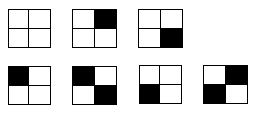

Có một khoảng sân hình chữ nhật kích thước 2 x n ô vuông, gồm 2 hàng và n cột. Đánh số hàng từ 1 đến 2 theo thứ tự từ trên xuống dưới, đánh số cột từ 1 đến n theo thứ tự từ trái qua phải. Người ta muốn lát sân bằng gạch màu trắng và điểm xuyết một số ô gạch màu đen, mỗi ô vuông được lát bởi một viên gạch, sao cho không có hai viên gạch màu đen nào chung cạnh với nhau. Hỏi có tất cả bao nhiêu cách khác nhau để lát khoảng sân trên (hai cách lát sân được gọi là khác nhau nếu tồn tại tối thiểu một ô ở dòng i cột j được lát gạch màu trắng ở cách này và lát gạch màu đen ở cách kia).
Ví dụ với n = 2, ta có 7 cách lát sân sau đây:

Dữ liệu nhập:
- Là một số nguyên n (1 ≤ n ≤ 1.000)
Dữ liệu xuất:
- Là số cách lát gạch khoảng sân theo yêu cầu trên. Số lượng này có thể rất lớn nên chỉ cần in ra 8 số cuối (mod 100.000.000)